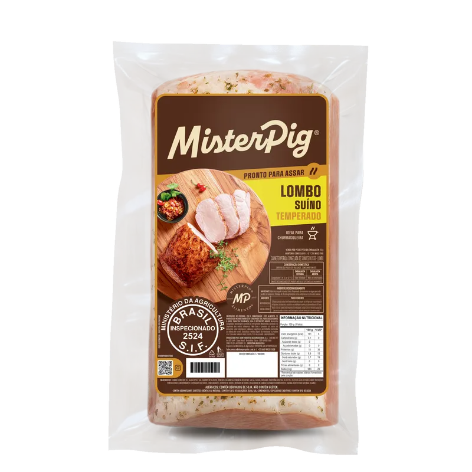
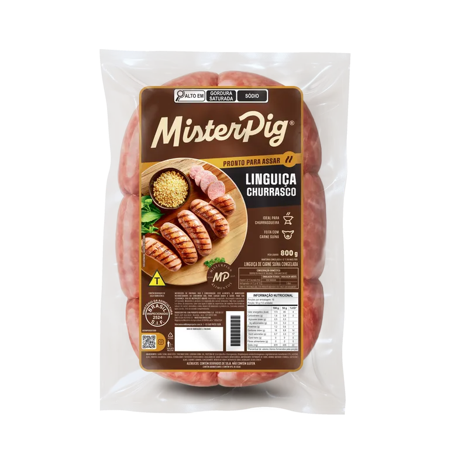
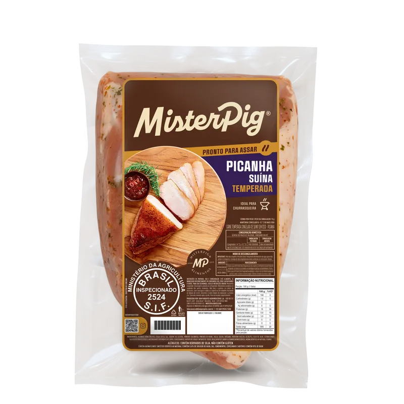
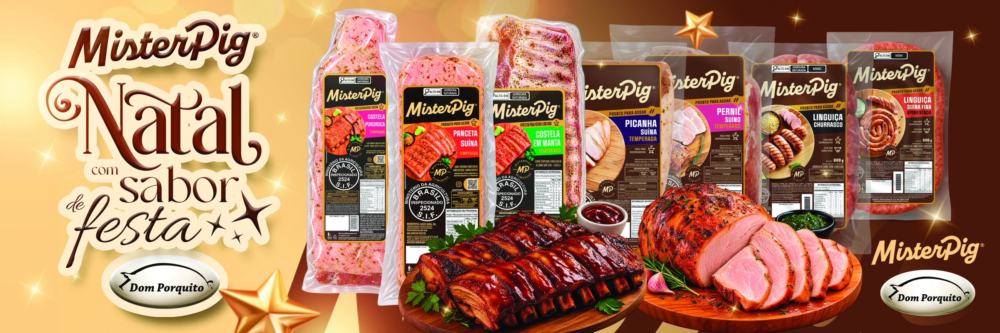

ESPECIAL DE NATAL 2026
O Natal começa
com uma mesa
cheia de sabor.
Cortes para o assado, linguiças para reunir os amigos e a ave natalina para o centro da mesa. Escolha os sabores do seu Natal.
Escolha os seus produtosA MESA É O NOSSO PONTO DE ENCONTRO
Do forno
à churrasqueira.
É tempo de reunir.


O lombo vai para o assado da ceia. As linguiças entram no churrasco da confraternização. Cada produto tem seu lugar nos encontros de fim de ano.
Conheça a seleçãoACREAVES · SABBOR
A estrela
da sua ceia.
Ave Natalina Temperada Sabbor.
Um lugar especial na mesa de Natal.
DOM PORQUITO · MISTER PIG
Assados para
reunir à mesa.
PARA ACENDER A CONFRATERNIZAÇÃO
Picanha suína temperada
Já temperada, para o churrasco que reúne a família e os amigos no fim de ano.
ROLE PARA CONHECER OS CORTES

CÓD. 20914A SUA SELEÇÃO DE NATAL
Escolha o sabor
do seu encontro.
Conheça os produtos de Natal e consulte os detalhes com o representante.

VAMOS PREPARAR O SEU NATAL?
Os sabores da sua
mesa de Natal.
Fale com o representante Consulte disponibilidade e condições
diretamente com o representante.